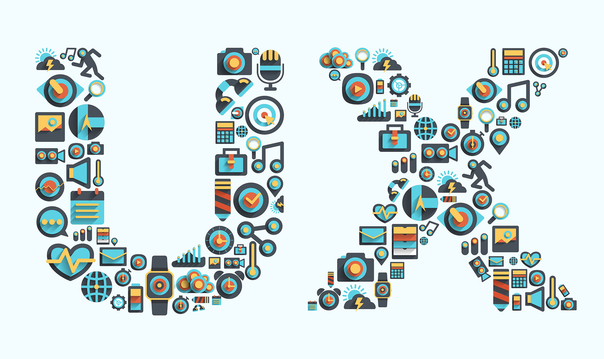
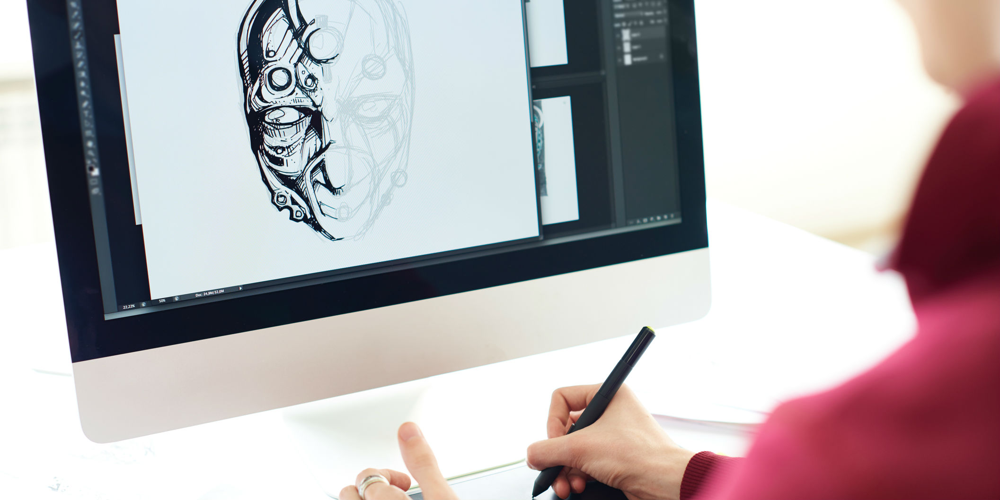
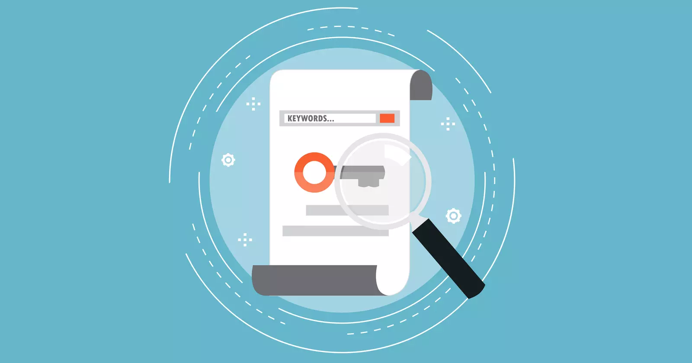

Basic Web
In theme 'Basic web' I learned the basic principles for the composition and layout.I also got my hands on color theory,moodboard,styletiles,typography and different project file/web files (like psd,ai,jpg,png,svg). I applied responsive principles of fronted web design,media queries,grid design to develope the user interfaces for my website.
Responsive Website

Basic UX
In theme Basic Ux , we were introduced to the miltimedia designer's role which is exemplified through research,analysis,prototyping and testing. I learned about hi-fi prototype and how to copy and micro-copy writing. I used desk research,surveys to learn the user experience with the usability of a given product.
Prototype
Design Sprint

Basic Animation
In theme Basic animation I had the knowledge of creating characters and backgrounds, kanban charts and persona collage. In my project sprite animation, I tried to make pose sheet ,simple shapes,storyboards which I later applied on our project Onboarding. I also work with Adobe XD,github,css animation,code editors for version controls.
Project Pool 1 V1
Project Pool 1 V2
Project Pool 2
Onboarding

Basic Content
In this theme Basic Content, we were focused on images and composition. In our final assignment, we work on a case and made a video in a specific context. I took the website developing part including relevant video context for company.
Foodsharing Copenhagen-website
Storyboard